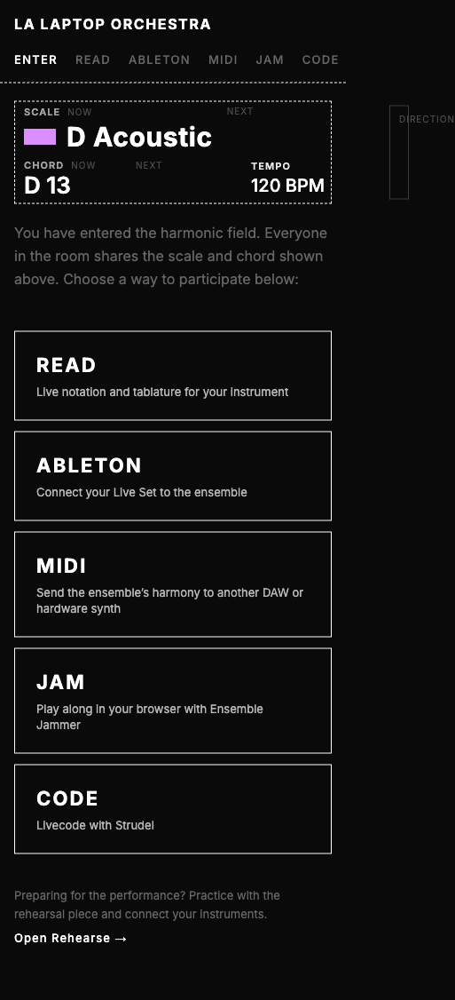
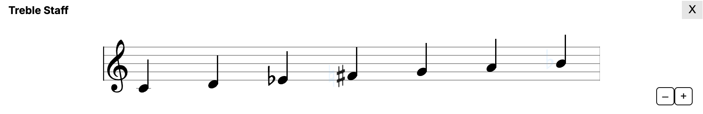
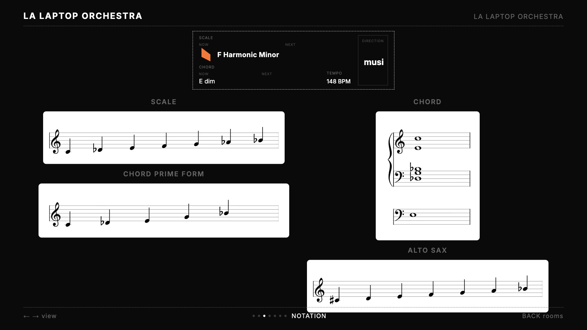
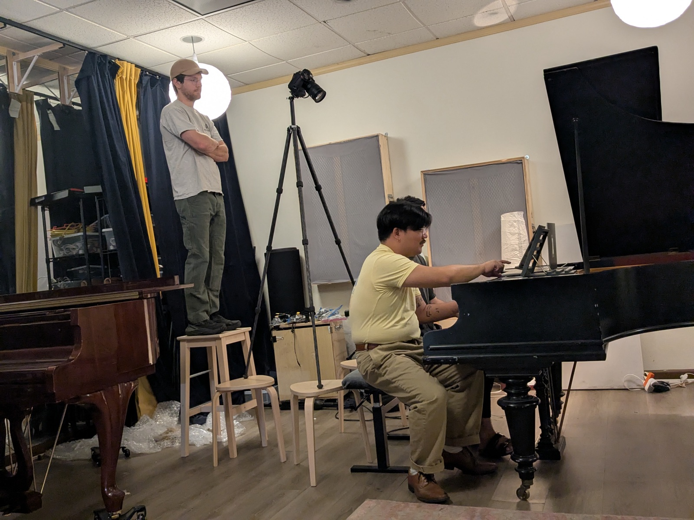

Enter / Read
Role · Designer & developer
For · LA Laptop Orchestra
Platforms · Web (phone, desktop, TV view) · React / Firebase / VexFlow
The door into LA Laptop Orchestra: one URL that greets a musician with the room's current harmony and gives them live notation for their own instrument. The room shares one scale and chord; each player chooses how to read it.
The central interaction, live: a harmony change is queued, incoming notes announce themselves, outgoing notes fade, and the change commits.
Problem
LA Laptop Orchestra is an ensemble I founded whose anchor is accessibility: everyone who walks into the room, from a sight-reading vibraphonist to someone who has never played, should be able to find their way into the music, understand when to play or listen, anticipate changes, and respond to each other without abandoning their own musical practice. The harmony is shared and it moves. The design question is what each person needs on their screen, at the moment the harmony moves, to keep playing.
Entering
One door, five ways in
A QR code opens Enter. The header shows what the room is playing now and next (scale, chord, tempo, and the conductor's direction text), and the portal asks one question: how do you want to participate? READ gives live notation and tablature. ABLETON and MIDI carry the harmony into a DAW or hardware synth. JAM opens Ensemble Jammer's browser instruments. CODE connects Strudel for live coding. An acoustic player can simply look at a neighbor's screen, or at the wall: the same app runs as a TV view, cycling ensemble, notation, and harmonic-geometry views so the room has one shared reference.


Current captures: the portal, and READ's default stack (guitar, piano, treble staff) following the room's D Acoustic / D 13.
Design decision
No parts. Everyone builds their own stand.
READ assigns nothing. Every performer sees the same room state and chooses their own way to read it, stacking views from 25 instrument and notation options: guitar in three tunings, banjo, mandolin, ukulele, harmonicas, piano, four clefs of staff notation, chord symbols, and several harmonic-geometry views. Each view transposes up to two octaves either way, draws from the scale, the chord, or both, and the whole stack reorders by drag and persists on the player's device. The same instrument can appear twice at two transpositions. A note's color says what it means everywhere: lit means play freely, cream means in the scale but outside the chord, blue means incoming, a fading ghost means leaving.
Anticipation
The interface gives you time
When the harmony changed, every view used to swap instantly, which destroyed the roughly one-second read-ahead a sight-reader depends on. Two pianists named the failure in a rehearsal ("it immediately plays the next thing — just, immediately, flash"), and the fix shipped over the following two days: every note carries one of four states (off, on, incoming, outgoing), arriving notes announce themselves with motion, departing notes fade, and the screen's edge glows while a change approaches. How much warning you get is a slider with presets from Rehearsal (2000 ms) to Expert (300 ms), an idea borrowed from rhythm games; a conductor can also set one lookahead for the whole room. The Pulse animation style was selected after testing alternatives; each device delays its own commit locally, so no clock-skew correction is needed. The full path from 217 sources down to four note states, and the recorded reading sessions behind the presets, is in the Notation Anticipation deep dive.

Staff view mid-anticipation: what changes is marked, what stays is left alone.
Preparation
Rehearse: the same harmony, before the downbeat
Rehearse drives the harmony ahead of time: it plays a backing video and steps a room through a piece's harmonic events in sync with it, hands out room codes, and serves the Ableton and Strudel bridges. Sometimes that room is the live ensemble, with a conductor signed in to steer it; opened alone it creates a private room, so anyone can self-conduct. For that solo path the backing video itself carries a screen recording of Read showing the most common notations and tablatures: frozen and not interactive, but enough to practice from with zero setup. Pasting the room code into Read is the opt-in second step, and it buys live notation in whatever views and transpositions the player chooses, the same ones they'll read in performance.
Its clearest field lesson was about the legibility of connection state: the Strudel snippet it offered pointed at the private practice room by default, and at the first public performance one live coder's patterns never followed the live harmony. Nobody could see that from the interface, which makes it a design bug.

The TV view's notation screen: one shared reference for the whole room, including transposing instruments.
Field test
The first public performance was August 15, 2026, at Scribble Community Center in Los Angeles, with roughly sixty people in the room, about ten of them programmed performers. The browser instruments that afternoon were Ensemble Jammer's: 42 GA4 clients produced 4,039 instrument events, with at most 22 clients playing in any single minute, and 41 of those Jammer sessions arrived through the Enter portal. The shared-state backend peaked at 78 concurrent connections. An August 6 reading session had already driven a round of fixes (wrong accidentals on the anticipation staff, direction text too small to read from a stand), and the exception list from the performance is the current worklist.

A reading session: the same room state, different notations, on whatever screen each player brought.
What's still unfinished
Connection state needs to be visible at a glance, so a player who is following the wrong room finds out from the screen and not from the music. The Rehearsal-to-Expert presets rest on two recorded sessions with one expert reader; they deserve testing across more players. And the ensemble's own debrief asked for more listening-first forms, which is a framework question before it is an interface one.
Credits
I designed and built the Enter, Read, and Rehearse apps. Leone Ermer, design collaboration and day-of technical support; Lily Clark, event identity; Nathan Ho, the recorded reading sessions that shaped the anticipation presets; Susana Pineda Correa and Nico Maldonado, co-creators of Moorland; Ben Tillotson and Zoey, documentation. The harmonic framework builds on Dmitri Tymoczko's voice-leading research, and the shared state is served by Scale Navigator.
Related work
Notation Anticipation — the anticipation system as an interaction deep dive
Ensemble Jammer — the browser instruments behind the JAM tab
Scale Navigator Dashboard — the surface that holds the state everything here reads